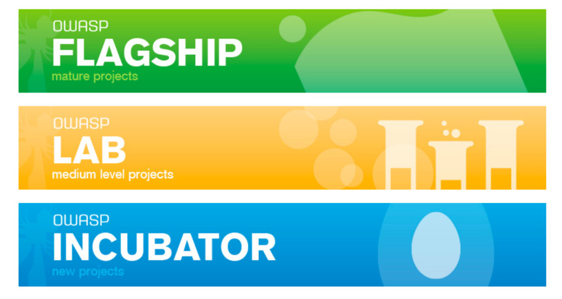
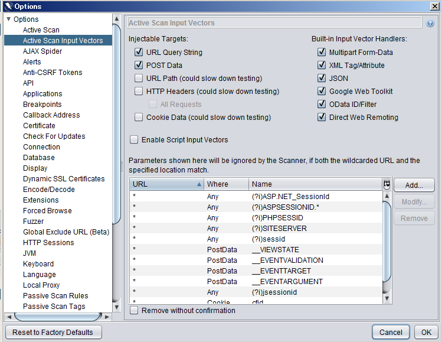
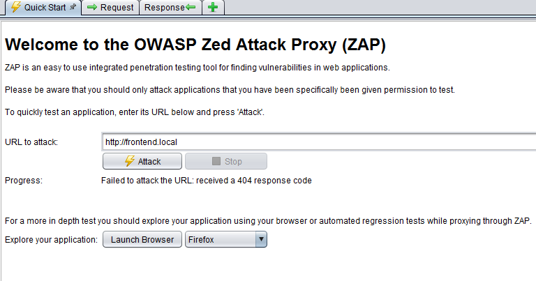
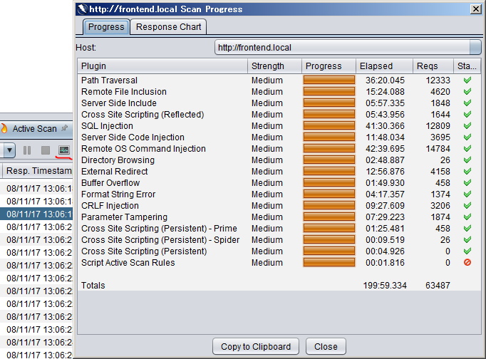

OWASP ZAP Simple Guide
오늘 이야기하는 내용
OWASP?
OWASP ZAP?
OWASP ZAP 기능 소개
OWASP ZAP 이용방법소개
OWASP ZAP 이용시 주의 사항
OWASP?
Open
Web
Application
Security
Project
The OWASP Foundation's Project
The OWASP Foundation?
Worldwide not-for-profit organization
Focused on improving the security of
software/service/develop process
The OWASP Foundation's Project?

The OWASP Foundation's Project?
OWASP ZAP?
OWASP Zed Attack Proxy
one of the world's
most popular {Free}
security tools
maintained by hundreds of international volunteers
It can help you automatically find security vulnerabilities in your web applications while you are developing and testing your applications
ZAP is designed specifically for testing web applications and is both flexible and extensible.
OWASP ZAP 이용방법소개



OWASP ZAP 이용시 주의 사항
Do Not Test Your Product Site(service)
정리하면
OWASP?
OWASP ZAP?
OWASP ZAP 기능 소개
OWASP ZAP 이용방법소개
OWASP ZAP 이용시 주의 사항
Thank You!